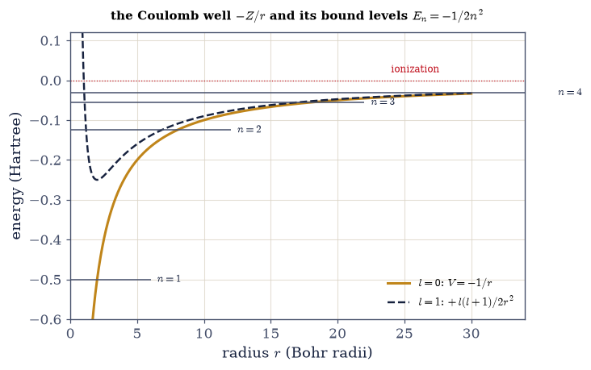
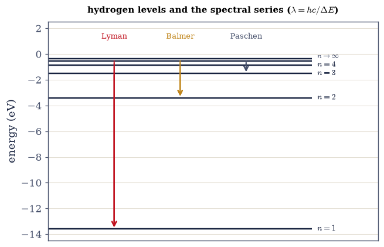
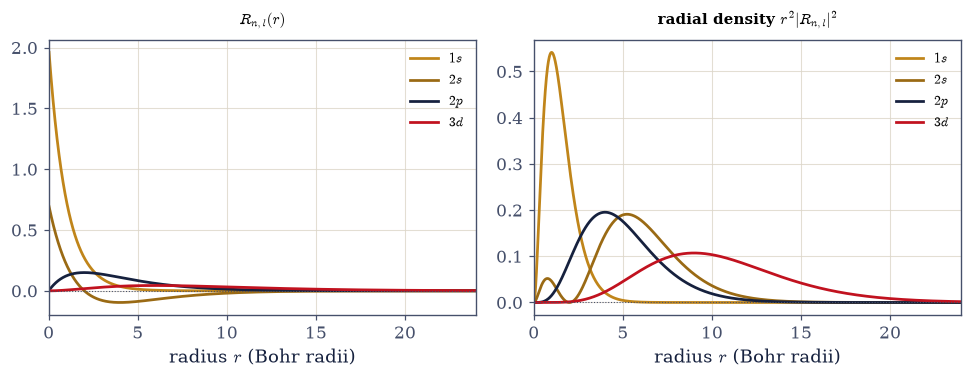
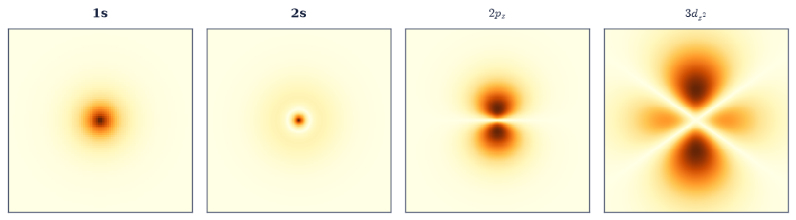

6.17 The Hydrogen Atom#
Notebook overview#
This is the notebook the whole volume has been building toward. Every tool is now in hand — the eigenvalue solver of §6.10, the spherical harmonics of §6.15, and the radial reduction of §6.16 — and we point all of them at the one potential that matters most: the Coulomb attraction of a proton for an electron, \(V(r)=-Z/r\). What comes out is the hydrogen atom, the first real atom ever solved exactly, and the calculation that turned quantum mechanics from a promising idea into the established theory of matter.
It delivers two triumphs. The first is the Rydberg spectrum \(E_n=-13.6\,Z^2/n^2\,\)eV: feeding \(V=-Z/r\) into the radial equation of §6.16 yields bound states whose energies depend on a single integer \(n\), and whose differences are exactly the spectral lines — Lyman, Balmer, Paschen — that spectroscopists had catalogued for decades without understanding. Bohr had guessed this formula in 1913 from a model he knew was provisional; here Schrödinger’s equation produces it exactly, on a grid, in seconds. The second triumph is the orbitals \(\psi_{n,l,m}=R_{n,l}(r)Y_l^m(\theta,\varphi)\) — the 1s, 2s, 2p, 3d shapes that organize all of chemistry, labelled by three quantum numbers: \(n\) (the shell), \(l\) (angular momentum, \(0\le l\le n-1\)), and \(m\) (orientation).
And then the surprise. The Coulomb energy depends only on \(n\), not on \(l\): the 2s and 2p states, though shaped completely differently, have exactly the same energy. Rotational symmetry alone would only make the \(2l+1\) orientations degenerate; this extra “accidental” \(l\)-degeneracy is special to the \(1/r\) potential, and it is no accident at all. It is the fingerprint of a hidden symmetry — the conservation of the quantum Runge–Lenz vector, which enlarges the rotation group \(SO(3)\) to \(SO(4)\), the very same conserved quantity that keeps a classical Kepler orbit from precessing (the thread from Volumes I, II, and IV, where Mercury’s failure to close revealed relativity). Counting a shell’s states gives \(n^2\) orbitals, \(2n^2\) with spin — exactly the \(2,8,18,32\) capacities of the periodic table’s rows.
As in every Volume VI notebook, each exercise opens with a crystal-clear statement and enumerated parts, each naming the exact operation — the §6.16 radial reduction \(u=rR\) with the Coulomb \(V_{\text{eff}}
=-Z/r+l(l+1)/2r^2\), the efficient scipy.linalg.eigh_tridiagonal for the radial eigenproblem, and
scipy.special.genlaguerre for the analytic hydrogen radial functions in the comparison.
Units and method notes. We work in atomic units (\(\hbar=m_e=e=4\pi\varepsilon_0=1\)), so energies are in Hartree (\(1\,\text{Ha}=27.211\,\)eV) and lengths in Bohr radii (\(a_0=1\), i.e. \(0.529\,\)Å). The radial Hamiltonian is tridiagonal (the \((1,-2,1)\) stencil), so we use
scipy.linalg.eigh_tridiagonalrather than the densenumpy.linalg.eighof §6.10 — the dense solver is far too slow on the fine grids and many \(l\) values this notebook needs. Numerical honesty: high- \(n\) orbitals are large and diffuse (\(\langle r\rangle\sim n^2 a_0\)), so the box \(r_{\max}\) must be big enough to contain them, or their energies come out spuriously high — a box artifact, not physics (the §6.10/§6.11 lesson). We keep comparisons to well-contained levels. The radial node count is \(n_r=n-l-1\). See Sakurai & Napolitano and Griffiths (the hydrogen atom, the degeneracy, the Runge–Lenz vector); and Notebooks §6.16 (the radial equation), §6.15 (the spherical harmonics), §6.10 (the eigenmethod), §6.12 (Laguerre/Hermite special functions).
Theory in brief#
The Coulomb problem#
The electron in a hydrogen-like atom feels the central potential
This is a central potential (§6.16), so the stationary states factor as \(\psi_{n,l,m}=R_{n,l}(r)Y_l^m( \theta,\varphi)\) and the radial function obeys the 1-D radial equation with the Coulomb well plus the centrifugal barrier. Their competition — the \(-Z/r\) attraction versus the \(l(l+1)/r^2\) repulsion — sets the sizes of the orbitals.
The Rydberg spectrum#
Solving the radial equation (a power-series analysis that Griffiths carries out in full) gives the bound-state energies
with \(n\) the principal quantum number and \(n_r\) the number of radial nodes. The differences \(E_n-E_{n'}\) are the spectral-line energies: the Lyman series (to \(n=1\), ultraviolet), Balmer (to \(n=2\), visible), and Paschen (to \(n=3\), infrared). This is the formula that explained the hydrogen spectrum — quantum mechanics’ first great empirical triumph.
The three quantum numbers and the orbitals#
The separation of variables in §6.16 did most of the labelling for us: the angular equation fixed \(Y_l^m\) with its integers \(l\) and \(m\), and the radial equation contributes one more integer, the node count \(n_r\), which combines with \(l\) into the principal quantum number \(n\). Every bound state therefore carries three labels:
The radial function \(R_{n,l}\) (an exponential times an associated Laguerre polynomial) has \(n_r=n-l-1\) nodes; the angular factor is a spherical harmonic (§6.15). Together they are the atomic orbitals — 1s, 2s, 2p, 3s, 3p, 3d, and so on. The radial density \(r^2|R|^2\) gives the probability of finding the electron at radius \(r\); for the ground state it peaks at the Bohr radius \(a_0\).
Shell degeneracy and the periodic table#
Counting the states of shell \(n\) is now pure arithmetic: each allowed \(l\) contributes its \(2l+1\) orientations, and the \(l\)-degeneracy just established puts them all at one energy, so the sum runs over \(l=0,\dots,n-1\) and gives
the exact row capacities of the periodic table. The shell structure of matter is the degeneracy counting of the hydrogen atom (spin, the factor of 2, is added properly in §6.18).
Realism caveats#
Before trusting the triumph, one should ask what the Hamiltonian left out. The answer, quantified by the perturbative estimates that Griffiths works through systematically, is: nothing above the \(10^{-3}\) level in relative terms, because every neglected effect is suppressed by powers of the fine-structure constant \(\alpha\approx1/137\) or of the mass ratio \(m_e/m_p\). In summary,
This is the non-relativistic, infinite-nuclear-mass, spinless-Coulomb atom. Real hydrogen has small corrections — the finite-mass (reduced-mass) shift, fine structure (relativistic + spin–orbit, §6.21), the Lamb shift (QED), and hyperfine structure (the 21-cm line) — all tiny on the scale of \(-13.6\,\)eV. The gross structure computed here is right to about \(0.05\%\) (reduced-mass-limited).
Setup#
The data are the series palette, the atomic-unit conversions (\(1\,\)Ha in eV, the Bohr radius in
ångströms, \(hc\) in eV·nm), and the analytic hydrogen radial functions — the closed Laguerre
form of Eq. 586, which is the reference standard the grid solutions are checked
against, not something to construct. The instruments are the radial density, which is nothing
but \(|u|^2\) once \(u=rR\), and the real spherical harmonics, built from scratch in
§3.5 and restated here as a tool for the
orbital cross-sections. The Coulomb radial solver is deliberately absent: you build
solve_hydrogen_radial in Exercise 1, and Exercises 2, 4, 5, 6 and 8 all run on the one you
wrote.
The Setup below holds this notebook’s data and instruments — nothing you are asked to build. It is collapsed so the building stays yours; expand it whenever you want the details.
Exercise 1 — The Coulomb radial equation and the ground state#
Every tool of the volume now meets one potential. The §6.16 reduction \(u=rR\) has already turned
the three-dimensional problem into a one-dimensional radial equation, and dropping the Coulomb
attraction into it gives \(V_{\text{eff}}(r)=-Z/r+l(l+1)/2r^2\) Eq. 584 — for \(s\)
states (\(l=0\)) the bare well \(-Z/r\), with no centrifugal barrier at all. Discretized on an
interior grid \(r\in(0,r_{\max})\) that excludes both endpoints (so \(u(0)=u(r_{\max})=0\) by
construction), the radial Hamiltonian is tridiagonal: the \((1,-2,1)/dr^2\) kinetic stencil plus
\(\mathrm{diag}\,V_{\text{eff}}\) has a diagonal \(1/dr^2+V_{\text{eff}}\) and a single off-diagonal
\(-\tfrac12/dr^2\), and nothing else. That is why scipy.linalg.eigh_tridiagonal replaces the dense
numpy.linalg.eigh of §6.10 here: it needs only those two vectors, and the fine grids and many
\(l\) values the rest of this notebook asks for would be far too slow dense. Dividing the
eigenvectors by \(\sqrt{dr}\) normalizes them to \(\int|u|^2dr=1\). The number the whole construction
must produce is the one Bohr guessed in 1913: \(E_1=-0.5\,\)Ha \(=-13.6\,\)eV Eq. 585, the
ground state of the first atom ever solved exactly.
Write
solve_hydrogen_radial(l, Z, rmax, N), returning the interior gridr, the ascending radial energies, and the matrix whose column \(n_r\) is \(u_{n_r,l}=rR\): build the grid withnumpy.linspace, form \(V_{\text{eff}}\), assemble the tridiagonal Hamiltonian’s diagonal and off-diagonal, diagonalize withscipy.linalg.eigh_tridiagonal, and divide by \(\sqrt{dr}\). Write this one yourself — the implementation is the lesson.Solve it at \(l=0\), \(Z=1\) on a box wide enough to hold the ground state, and read the lowest energy.
Confirm \(E_1=-0.5\,\)Ha and convert to eV with
HARTREE_EV.
hydrogen ground state (l=0): E₁ = -0.49997 Ha = -13.605 eV
exact: −0.5 Ha = −13.606 eV
(n_r = 0 radial nodes, so n = n_r + l + 1 = 1: the 1s state)
Validation 1#
✓ the hydrogen ground state is E₁ = −0.5 Ha = −13.6 eV (the first exactly-solved atom) [got -0.499972 vs expected -0.5 (rtol=1e-06, atol=0.002)]
True

Fig. 555 The Coulomb well and its bound ladder. The effective potential \(V_{\text{eff}}(r)=-Z/r+l(l+1)/2r^2\) for hydrogen. For \(l=0\) (amber) it is the bare Coulomb well \(-1/r\); the horizontal lines are the computed \(s\)-state energies \(E_n=-1/2n^2\,\)Ha, crowding toward the \(E=0\) ionization threshold as \(n\) grows — the infinitely many bound states of the long-range \(1/r\) tail. For \(l=1\) (ink, dashed) the centrifugal barrier \(l(l+1)/2r^2\) lifts the well’s floor and walls off the origin, so the lowest \(p\) state is \(2p\) (there is no \(1p\)). The energies pile up at \(E=0\): unlike a finite well, the Coulomb potential binds an infinite ladder, because \(-1/r\) falls off slowly enough to hold states arbitrarily far out.#
Exercise 2 — The Rydberg spectrum#
One value of \(l\) gives one ladder; the spectrum is what happens when the ladders are laid side by side. Each fixed-\(l\) solve returns its bound states (\(E<0\)) in order, so the level at index \(n_r\) is the one with \(n_r\) radial nodes, and its principal quantum number is \(n=n_r+l+1\) Eq. 586. Labelled that way, every level should fall on \(E_n=-1/2n^2\,\)Ha \(=-13.6/n^2\,\)eV Eq. 585 — the formula that explained the spectral lines, and the reason this calculation mattered. One caution before reading the numbers: a level only lands on its Rydberg value if the box holds it, and since \(\langle r\rangle\sim n^2a_0\) the high-\(n\) states outgrow any fixed \(r_{\max}\) and come out spuriously high. That is a box artifact, not physics (the §6.10/§6.11 lesson), so the comparison below is kept to the well-contained levels.
With the
solve_hydrogen_radialyou wrote in Exercise 1, solve for \(l=0,1,2\) and collect the bound energies.Assign each level its principal number \(n=n_r+l+1\).
Compare the well-contained levels to \(-1/2n^2\).
hydrogen spectrum Eₙ = −1/2n² (well-contained levels, box r_max = 60 a₀):
n=1, l=0 (n_r=0): E = -0.49997 Ha (−1/2n² = -0.50000) = -13.605 eV
n=2, l=0 (n_r=1): E = -0.12500 Ha (−1/2n² = -0.12500) = -3.401 eV
n=3, l=0 (n_r=2): E = -0.05556 Ha (−1/2n² = -0.05556) = -1.512 eV
n=2, l=1 (n_r=0): E = -0.12500 Ha (−1/2n² = -0.12500) = -3.401 eV
n=3, l=1 (n_r=1): E = -0.05556 Ha (−1/2n² = -0.05556) = -1.512 eV
n=4, l=1 (n_r=2): E = -0.03125 Ha (−1/2n² = -0.03125) = -0.850 eV
n=3, l=2 (n_r=0): E = -0.05556 Ha (−1/2n² = -0.05556) = -1.512 eV
n=4, l=2 (n_r=1): E = -0.03125 Ha (−1/2n² = -0.03125) = -0.850 eV
n=5, l=2 (n_r=2): E = -0.01978 Ha (−1/2n² = -0.02000) = -0.538 eV
Validation 2#
✓ the hydrogen spectrum is Eₙ = −Z²/2n² Hartree (the Rydberg formula), for every (n,l) [max|Δ| = 0.000222874 (rtol=1e-06, atol=0.002)]
True
With your assistant
Ask your assistant for a radial-grid convergence sweep of its own design — grid sizes, box radii, however it structures the loop — and run it. The gate is the one this atom is famous for: the computed levels must approach \(E_n = -1/(2n^2)\) Hartree, and a sweep that “converges” anywhere else has converged to its own discretization, not to hydrogen. The check is yours.
Exercise 3 — Spectral lines: Lyman, Balmer, Paschen#
What a spectroscope records is not an energy level but a difference between two of them: an
electron falling from \(n'\) to \(n\) emits a photon carrying \(\Delta E=E_{n'}-E_n\), which appears at
the wavelength \(\lambda=hc/\Delta E\) (with \(hc=1239.84\,\)eV·nm, the HC_EV_NM constant). Grouping
the transitions by their lower level sorts them into the classic series: Lyman down to \(n=1\)
(ultraviolet), Balmer down to \(n=2\) (visible), Paschen down to \(n=3\) (infrared). The
Balmer lines are the ones a person can actually see — \(H\alpha\) (\(3\to2\)) observed at \(656.3\,\)nm,
\(H\beta\) (\(4\to2\)) at \(486\,\)nm — and Balmer fit them by eye in 1885, four decades before there
was a theory to fit. Reproducing that catalogue line for line, out of Eq. 585 alone, is
quantum mechanics’ most direct empirical triumph.
From \(E_n=-1/2n^2\,\)Ha, form the transition energies \(\Delta E=E_{n'}-E_n\) for \(n'>n\).
Convert them to wavelengths \(\lambda=hc/\Delta E\).
Compare the Balmer \(H\alpha\) and \(H\beta\) wavelengths to the observed lines.
Lyman (→1, UV) : 2→1: 122 nm 3→1: 103 nm 4→1: 97 nm
Balmer (→2, visible) : 3→2: 656 nm 4→2: 486 nm 5→2: 434 nm
Paschen (→3, IR) : 4→3: 1875 nm 5→3: 1281 nm 6→3: 1094 nm
Balmer Hα (3→2) = 656.1 nm (observed 656.3 nm — the red hydrogen line)
Validation 3#
✓ the energy differences reproduce the hydrogen spectral series — the Balmer Hα line at 656 nm [got 656.112 vs expected 656.3 (rtol=1e-06, atol=2)]
True

Fig. 556 The spectral series, from energy differences. The hydrogen energy levels \(E_n=-13.6/n^2\,\)eV (horizontal lines), with the transitions that produce the three classic spectral series drawn as arrows: Lyman (down to \(n=1\), ultraviolet), Balmer (down to \(n=2\), visible — this is the series Balmer fit by eye in 1885), and Paschen (down to \(n=3\), infrared). The energy released in each downward jump sets the photon’s wavelength through \(\lambda=hc/\Delta E\); the labelled Balmer lines land in the visible (\(H\alpha\) red at 656 nm, \(H\beta\) blue-green at 486 nm), exactly where spectroscopists saw them. That these arrows reproduce a catalogue compiled decades before quantum mechanics existed is the theory’s first and most direct empirical triumph.#
Exercise 4 — The orbitals: radial functions and shapes#
The energies are only half of what the radial equation returns. The eigenvectors are the reduced
functions \(u_{n_r,l}\), and dividing out the reduction, \(R_{n,l}=u/r\), gives the radial factor of
the orbital \(\psi_{n,l,m}=R_{n,l}Y_l^m\) Eq. 586. There is an exact answer to check them
against: \(R_{n,l}\) is an exponential times an associated Laguerre polynomial, the closed form
hydrogen_radial_analytic supplies from scipy.special.genlaguerre, and the two should agree to
the discretization error. The structural fingerprint to look for is the node count \(n_r=n-l-1\) —
the 1s and 2p are nodeless, the 2s changes sign once — which is exactly the index at which each
state sits in its fixed-\(l\) list. Two cautions on the comparison: a diagonalizer returns
eigenvectors up to an arbitrary overall sign, so one of the two curves may need flipping before
they can be subtracted, and the agreement should be judged where the function has appreciable
amplitude, not out in the exponential tail where both are numerically zero. Wrapping the radial
factor in the §6.15 angular shapes then gives the full orbital density \(|\psi_{n,l,m}|^2\) — the
1s, 2s, 2p, 3d pictures that organize chemistry.
With the
solve_hydrogen_radialyou wrote in Exercise 1, extract \(R_{n,l}(r)=u/r\) from the grid for \((1,0),(2,0),(2,1)\).Compare each to the analytic Laguerre form and confirm the radial node count \(n_r=n-l-1\) (1s: 0, 2s: 1, 2p: 0).
Plot \(R_{n,l}\), the radial densities \(r^2|R|^2\), and a cross-section of the full orbital density \(|\psi_{n,l,m}|^2\).
grid radial functions vs analytic (Laguerre) forms:
1s (n_r=0 nodes): max|R_grid − R_analytic| = 8.69e-05
2s (n_r=1 node): max|R_grid − R_analytic| = 8.41e-06
2p (n_r=0 nodes): max|R_grid − R_analytic| = 2.80e-06
Validation 4#
✓ the grid radial functions match the analytic hydrogen orbitals (scipy.special.genlaguerre) with n_r=n−l−1 nodes
True

Fig. 557 The hydrogen radial functions. Left: the radial functions \(R_{n,l}(r)\) for 1s, 2s, 2p, 3d — computed on the grid, matching the analytic Laguerre forms to a part in \(10^4\). The node count is \(n_r=n-l-1\): the 1s and 2p are nodeless, the 2s has one radial node (it changes sign), and the diffuse 3d spreads far out. Right: the radial probability densities \(r^2|R|^2\) — the probability of finding the electron in a thin shell at radius \(r\). The extra factor of \(r^2\) pushes every peak outward from the origin (even the 1s, whose \(R\) is largest at \(r=0\), is most likely found at \(r=a_0\), Exercise 5), and higher shells peak further out, building the atom’s layered structure.#

Fig. 558 The atomic orbitals: cross-sections of \(|\psi_{n,l,m}|^2\). Slices of the probability density in the \(x\)–\(z\) plane (bright = high probability), each the product of a radial function \(R_{n,l}(r)\) and an angular shape \(Y_l^m\) (§6.15). The 1s is a compact spherical cloud; the 2s is a larger sphere with a faint inner shell set off by its radial node; the 2p\(_z\) is the two-lobed dumbbell along \(z\); and the 3d\(_{z^2}\) shows the characteristic lobes-and-collar of a \(d\) orbital, now dressed with radial structure. These are the shapes that determine how atoms bond — the whole of structural chemistry is built from the angular harmonics of §6.15 wrapped in these Coulomb radial functions.#
Exercise 5 — The most probable radius and the Bohr radius#
“How big is a hydrogen atom” has a sharp answer once the wavefunction is in hand, but it needs the right question. The quantity to look at is the radial probability density \(r^2|R_{10}|^2\), which because \(u=rR\) is simply \(|u_{10}|^2\) — the probability of finding the electron in a thin shell at radius \(r\), angles integrated out. Its maximum is the most probable radius, and for the ground state it should land on the Bohr radius \(a_0\), which in atomic units is exactly \(1\) Eq. 586: the length Bohr postulated in 1913, here recovered from the wavefunction rather than assumed. It is worth contrasting that with the mean radius \(\langle r\rangle=\int r|u|^2dr\), which comes out at \(1.5\,a_0\) — larger, because the density has a long outward tail that pulls the average out while leaving the peak where it is. Note also that \(R\) itself is largest at the nucleus; it is the \(r^2\) shell volume that moves the most likely radius outward.
With the
solve_hydrogen_radialyou wrote in Exercise 1, form the ground-state radial density \(|u_{10}|^2\) (radial_density).Find its maximum (
numpy.argmax) and confirm the peak is at \(r=a_0\).Compute the mean radius \(\langle r\rangle\) and compare it with the peak.
ground-state (1s) radial density r²|R|² = |u|²:
most probable radius r_peak = 1.000 a₀ (the Bohr radius a₀ = 1, = 0.529 Å)
mean radius ⟨r⟩ = 1.500 a₀ (larger — the density has a long outward tail)
Validation 5#
✓ the ground-state radial density peaks at the Bohr radius a₀ (=1 atomic unit) [got 0.99975 vs expected 1 (rtol=1e-06, atol=0.02)]
True
Exercise 7 — Shell degeneracy and the periodic table (student)#
With the \(l\)-degeneracy of Exercise 6 established, counting the states of a shell is pure arithmetic. Each allowed \(l\) contributes its \(2l+1\) orientations, the degeneracy puts them all at one energy, and the sum runs over \(l=0,\dots,n-1\) to give \(n^2\) orbitals per shell, or \(2n^2\) once the electron’s two spin states are counted (§6.18) Eq. 588. Those numbers — \(2,8,18,32\) — are the row capacities of the periodic table. The shell structure of matter is hydrogen’s degeneracy counting, with one caveat worth stating plainly: in real atoms screening reorders the subshells (4s fills before 3d), so the filling order is not hydrogen’s, even though the counting is.
For \(n=1..4\), count the orbitals \(\sum_{l=0}^{n-1}(2l+1)\) and check the sum equals \(n^2\).
Multiply by 2 for spin and compare to the periodic table’s row lengths \(2,8,18,32\).
shell degeneracy Σ(2l+1) = n², and 2n² with spin:
n=1: 1(s) = 1 = n² → 2n² = 2 (periodic-table row 1: 2)
n=2: 1(s) + 3(p) = 4 = n² → 2n² = 8 (periodic-table row 2: 8)
n=3: 1(s) + 3(p) + 5(d) = 9 = n² → 2n² = 18 (periodic-table row 3: 18)
n=4: 1(s) + 3(p) + 5(d) + 7(f) = 16 = n² → 2n² = 32 (periodic-table row 4: 32)
the 2, 8, 18, 32 row capacities ARE the hydrogen shell degeneracies 2n²
(in real atoms screening reorders subshells — e.g. 4s fills before 3d — but the counting stands)
Validation 7#
✓ shell n holds n² orbitals (2n² with spin) = the periodic-table row capacities 2,8,18,32 — the n² degeneracy underlies the periodic table
True
Exercise 8 — Hydrogen-like ions and scaling (student)#
The nuclear charge \(Z\) was carried along all through Eq. 584 and Eq. 585 without ever being set to anything but 1, and collecting it now buys a whole isoelectronic family — He\(^+\), Li\(^{2+}\), and every other one-electron ion — from the same solution. A stronger nucleus binds more tightly and pulls the electron in: energies deepen as \(E_n=-Z^2/2n^2\), and the orbitals shrink as \(1/Z\), so the ground-state density peaks at \(a_0/Z\). One practical consequence of that shrinking is that the box should shrink with it — scaling \(r_{\max}\) down by \(Z\) keeps each ion’s grid resolving its own compressed wavefunction instead of spending points on empty space.
With the
solve_hydrogen_radialyou wrote in Exercise 1, solve at nuclear charge \(Z=1,2,3\).Confirm the energies scale as \(E_n=-Z^2/2n^2\).
Confirm the ground-state density peak moves to \(a_0/Z\).
hydrogen-like ions: E₁ = −Z²/2, r_peak = a₀/Z
H (Z=1): E₁ = -0.5000 Ha (−Z²/2 = -0.5000) r_peak = 0.9997 a₀ (a₀/Z = 1.0000)
He⁺ (Z=2): E₁ = -1.9999 Ha (−Z²/2 = -2.0000) r_peak = 0.4998 a₀ (a₀/Z = 0.5000)
Li²⁺ (Z=3): E₁ = -4.4998 Ha (−Z²/2 = -4.5000) r_peak = 0.3332 a₀ (a₀/Z = 0.3333)
a stronger nucleus binds tighter (E ∝ Z²) and pulls the electron in (size ∝ 1/Z)
Validation 8#
✓ hydrogen-like ion energies scale as Eₙ = −Z²/2n² and orbitals shrink as 1/Z [max|Δ| = 0.000199849 (rtol=0.01, atol=1e-09)]
True
Exercise 9 — The atom that built the theory (synthesis)#
Everything in this volume came together here. The spherical harmonics gave us the angles (§6.15), the radial reduction gave us the distance (§6.16), and the eigenvalue solver gave us the energies (§6.10) — and out of the three came the hydrogen atom: the Rydberg spectrum that matched the spectral lines to a fraction of a percent, the orbitals that shape every molecule, and a degeneracy so exact it revealed a symmetry no one had put in by hand.
There is no new computation to do here; the atom is the result. The energy’s blindness to \(l\) is the quantum echo of the Kepler ellipse that never precesses — the conserved Runge–Lenz vector, the same \(SO(4)\) symmetry we first met as the closed orbit of an inverse-square force in Volumes I and II, and whose tiny violation (Mercury’s precession) opened the door to general relativity in Volume IV. Here it is exact, and its breaking — by letting inner electrons screen the nucleus, so the potential is no longer quite \(1/r\) — is what splits \(s\) from \(p\) from \(d\) and gives the periodic table its rows and columns. What remains is to add the one thing the Schrödinger equation left out: the electron’s spin, the fourth quantum number, which the next notebook (§6.18) restores and which completes the \(2n^2\) counting — and which fine structure (§6.21) will use to split these perfect Coulomb levels at last.
Bohr guessed the \(-13.6\,\)eV\(/n^2\) formula in 1913 from a model he knew was provisional. Thirteen years later the Schrödinger equation produced it exactly, along with the orbitals Bohr could not have drawn, and hid inside it a symmetry that took another decade to name. We computed the whole of it, on a grid, in an afternoon.
Notebook summary#
The hydrogen atom — the crown of Movement III, and a summit of the volume.
The Coulomb problem Eq. 584: \(V=-Z/r\) in the §6.16 radial equation, \(V_{\text{eff}}=-Z/r+ l(l+1)/2r^2\), solved with
scipy.linalg.eigh_tridiagonalin atomic units.The Rydberg spectrum Eq. 585: \(E_n=-Z^2/2n^2\,\)Ha \(=-13.6\,Z^2/n^2\,\)eV; the differences are the Lyman/Balmer/Paschen lines (\(H\alpha=656\,\)nm), matched to spectroscopy.
The orbitals Eq. 586: \(\psi_{n,l,m}=R_{n,l}Y_l^m\), radial nodes \(n_r=n-l-1\), matching the analytic Laguerre forms to \(\sim10^{-4}\); the 1s density peaks at the Bohr radius \(a_0\).
The \(l\)-degeneracy Eq. 587: \(E\) depends on \(n\) only — the Runge–Lenz / \(SO(4)\) hidden symmetry (the closed Kepler orbit), broken by screening in many-electron atoms.
Shell degeneracy Eq. 588: \(n^2\) orbitals (\(2n^2\) with spin) \(=2,8,18,32\) — the periodic table’s rows.
Scaling: hydrogen-like ions have \(E\propto Z^2\) and sizes \(\propto1/Z\).
The first exact atom, the spectrum that explained the lines, and a hidden symmetry linking the quantum atom to the classical Kepler orbit. Only spin is missing — and that is next.
Outlook#
Spin (§6.18): the fourth quantum number \(m_s\), the electron’s intrinsic angular momentum (the half-integers of §6.14), completing the \(2n^2\) counting.
Fine structure (§6.21): relativistic and spin–orbit corrections lift the \(l\)-degeneracy; the Lamb shift (QED) and hyperfine structure (the 21-cm line) are further, tinier splittings (horizons).
Many-electron atoms and the periodic table (a horizon): screening breaks the \(SO(4)\) symmetry and orders the subshells, with the exclusion principle filling them.
The Runge–Lenz vector and \(SO(4)\) (an algebraic horizon): hydrogen solved by symmetry alone, with no differential equation — the Pauli/Fock method.
Cross-reference §6.16 (the radial equation), §6.15 (the spherical harmonics), §6.10 (the eigenmethod), §6.12 (Laguerre/Hermite special functions), and forward to §6.18, §6.21.